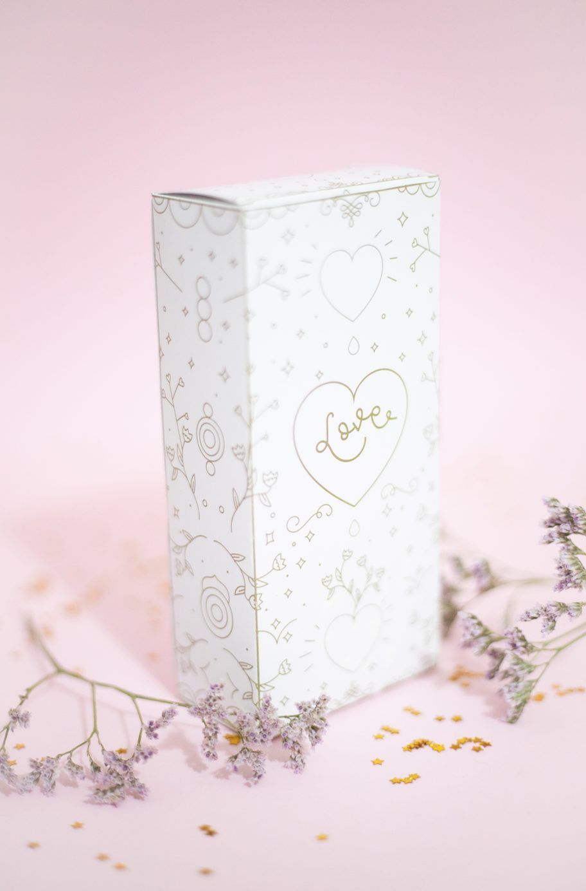
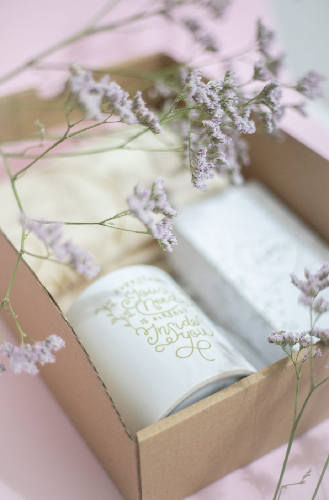
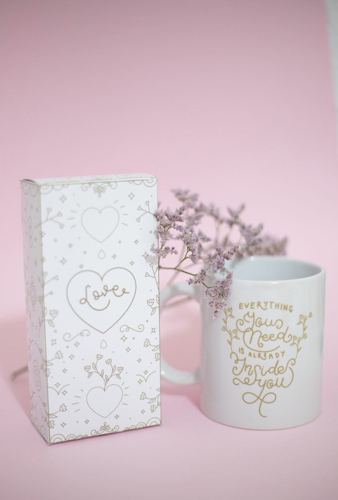

Love
Concepto
Proyecto conceptual de branding y packaging. Una reinterpretación del universo visual de Mr. Wonderful, partiendo del amor entendido en todas sus formas.
Diseño de packaging y aplicación gráfica.

Pieza
Caja, taza y aplicaciones gráficas.



El proyecto
El tono emocional y cercano de la marca se mantiene, pero el lenguaje gráfico se depura: menos ruido, más mensaje. El resultado es un sistema de packaging limpio y reconocible, adaptable a distintos productos. La pregunta de fondo es hasta dónde puede estirarse una identidad consolidada sin dejar de ser ella misma.
Siguiente proyecto